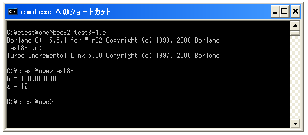
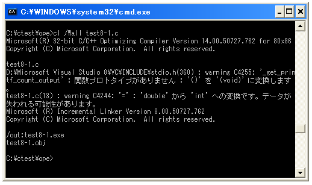
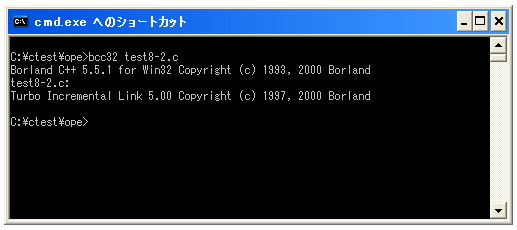
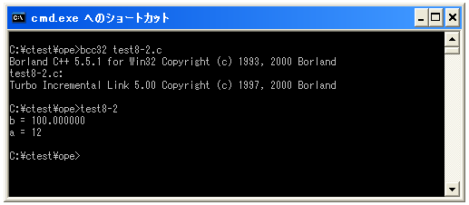
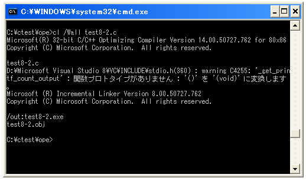

キャスト演算子
通常演算は同じデータ型を持つ変数や値の間で行われます。ただ「int」型の値を「double」型の変数に格納したり、逆に「double」型の値を「int」型の変数に格納したりする場合があります。このような場合に型を変換するために使われるものがキャスト演算子です。
実は型の変換は自動的に行われます。まず簡単なサンプルで試してみます。
#include <stdio.h>
int main(void){
int a;
double b;
a = 100;
b = a;
printf("b = %f¥n", b);
b = 12.345;
a = b;
printf("a = %d¥n", a);
return 0;
}
上記は「int」型の値を「double」型の変数に格納した場合と、「double」型の値を「int」型の変数に格納した場合において格納された値を出力するサンプルです。コンパイルの時点でもプログラムを実行した時点でも特にエラーは表示されません。

上記はBorland C++でコンパイルした場合ですが、Visual C++を使って警告を全て有効にしてコンパイルを行うと次のような警告が表示されます。

警告は「'double' から 'int' への変換です。データが失われる可能性があります。」となっています。これはより大きな数値を扱うことが出来る「double」型から「int」型へ値を変換しているので、場合によっては値の一部が無くなる可能性があることを警告しています。
普通にコンパイルしただけでは警告が出ないように型の変換を行うことは問題があるわけではありません。特別な記述をしなくても型の変換は自動的に行われます。ただ、プログラムの中で型を変換することを明示的に記述することが出来ます。その際に使われるのがキャスト演算子です。
キャスト演算子の書式は次の通りです。
(型)式
式のデータ型を()の中で指定した型に変換します。具体的には次のように記述します。
double a = 10.5; int b = (int)a;
上記の例では変数「a」の値を「int」型に変換したものを左辺の変数「b」に格納します。この時変数「a」のデータ型や格納されている値に変更はありません。変数「a」に格納される値を取り出し、「int」型に変換してから変数「b」に格納するというだけです。
サンプルプログラム
では簡単なサンプルプログラムを作成して試してみます。
#include <stdio.h>
int main(void){
int a;
double b;
a = 100;
b = (double)a;
printf("b = %f¥n", b);
b = 12.345;
a = (int)b;
printf("a = %d¥n", a);
return 0;
}
上記を「test8-2.c」の名前で保存します。まずコンパイルを行います。

コンパイルが終わりましたら「test8-2」と入力して実行します。

明示的にキャストを記述しただけですので最初のサンプルと結果は同じです。ただしVisual C++を使って警告を全て有効にしてコンパイルを行ってもキャストに関する警告は表示されません。

今回のサンプルでも「double」から「int」への変換を行っていますが、自動で型変換をしたのではなくキャスト演算子を使って明示的に型変換を行っていますので、あえて警告を表示して注意を呼びかける必要がなくなっているためです。
( Written by Tatsuo Ikura )

著者 / TATSUO IKURA
初心者～中級者の方を対象としたプログラミング方法や開発環境の構築の解説を行うサイトの運営を行っています。